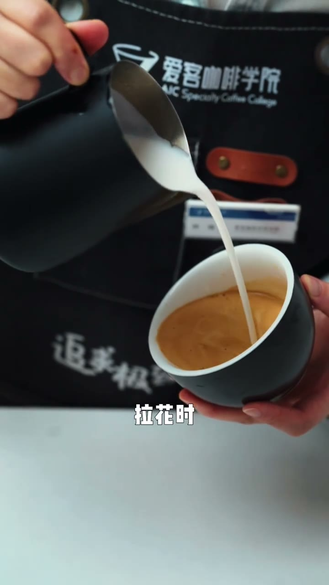

30秒找到拉花不好看的原因：奶缸回退
查看原视频核心诊断
- 图案细长不好看 → 奶缸在拉花时不自觉地向后退
- 原因是随着杯子回震，奶缸也跟着后退，导致图案被拉长
- 正确做法：杯子回震时，奶缸反而向中心点靠近
问题：奶缸不自觉后退
拉花过程中，身体会随着杯子回震而本能地把手也往后拉。奶缸一后退，图案就被拉长了，变得细窄不好看。

修正：向中心点靠近
杯子回震时，奶缸在释放流量的同时往中心点方向推进。这样图案会更集中、更饱满，完成度更好。
核心修正：跟杯子的回震方向相反——杯子往后震，奶缸往前靠中心点
文字转录
Whisper 转录，可能含识别误差。
- [0:00]今天我们来看一下新手拉花最容易出现的第五个问题
- [0:03]拉花时奶缸总是不自觉的向后退
- [0:06]拉花过程中奶缸总是随着杯子的回震不自觉的后退
- [0:09]从而导致图案细长 不好看
- [0:13]正确的操作应该随着杯子的浮震
- [0:16]奶缸在释放流量时可以往中心点靠近
- [0:19]图案完成度会更好 图案会更饱满